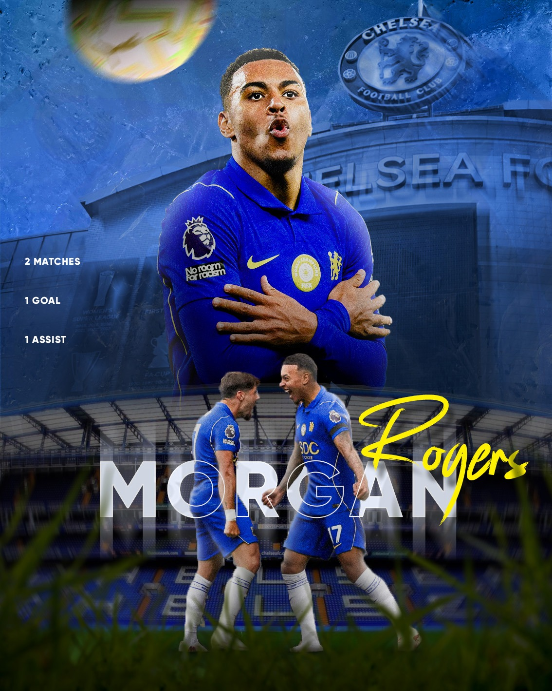
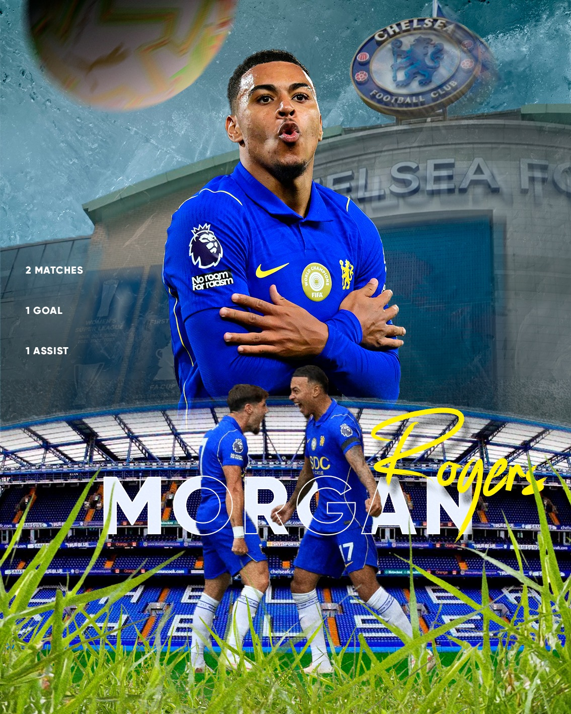

09 Sport design, projet personnel, sept. 2026
Morgan Rogers
Ma première.
C'est l'affiche par laquelle j'ai commencé à publier mon sport design sur Instagram. Quatre heures de travail, seul, en apprenant au fur et à mesure. Je suis fan de Chelsea, et pour une première sortie publique je voulais des conditions faciles : du football, un grand club, un joueur dont les photos se trouvent sans difficulté.
Les chiffres affichés, deux matchs, un but, une passe décisive, sont ceux de Rogers en début de saison au moment où j'ai posté. Ce n'est pas un bilan, c'est un instantané.

L'affiche
01 Le montage
Du haut vers le bas, trois plans.
J'ai commencé par le grand joueur, celui qui occupe tout le haut, puis j'ai construit autour. Le fond est Stamford Bridge, avec un mur de glace ajouté par dessus pour casser la platitude de la photo d'origine. Les brins d'herbe du premier plan sont une photo détourée, posée devant tout le reste pour donner une profondeur de champ.

02 Le résultat
Un bon début.
Ce que j'aime le plus, c'est le traitement du nom : « Morgan » en très grand, en contour blanc derrière les joueurs, et « Rogers » en script jaune par dessus. C'est un style que j'avais vu ailleurs, que j'ai aimé, et que je me suis approprié depuis.
Ce qui me gêne : le ballon en haut à gauche. J'ai essayé plusieurs flous, aucun ne rendait bien, et j'ai fini par garder celui-là faute de mieux. Je le referais autrement aujourd'hui.
Exercice personnel non commercial, réalisé à partir de photographies de presse retouchées. Aucune affiliation avec le Chelsea FC, la Premier League ou les marques visibles sur l'équipement.